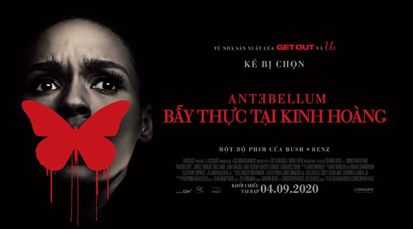

6 đạo diễn tỉ đô làm nên thành công của những bom tấn đình đám nhất Hollywood

[ANTEBELLUM] - 4 lý do không thể bỏ lỡ siêu phẩm kinh dị Antebellum: Bẫy Thực Tại Kinh Hoàng
Trong hơn 20 năm qua, Nolan đã thành công chiêu mộ và chỉ đạo nhiều diễn viên nổi tiếng trong những tác phẩm kinh điển như The Dark Knight, Inception, Interstellar, Dunkirk và sắp tới đây là Tenet...